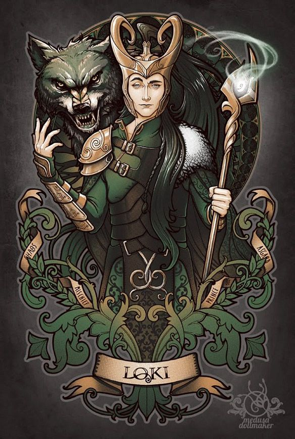
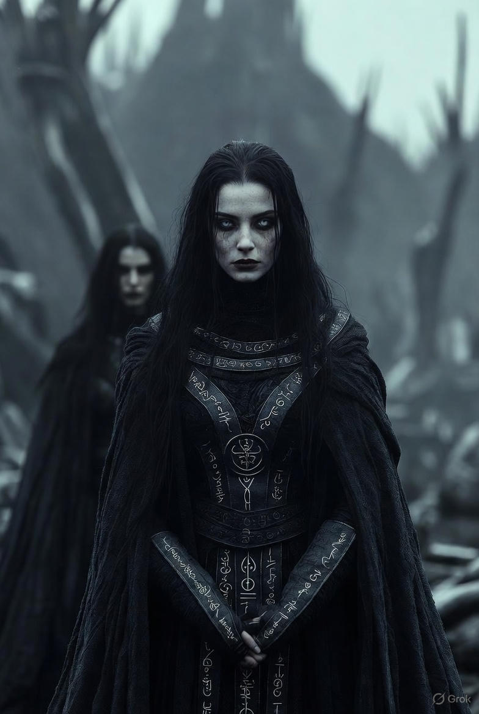
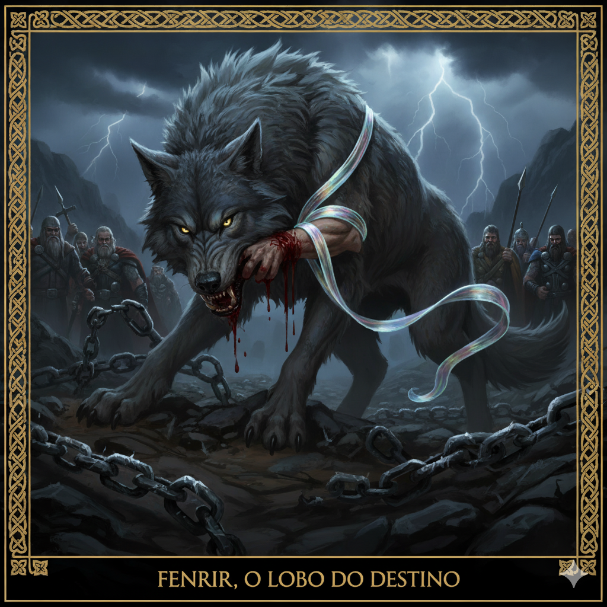

⚔️ A Morte de Balder — O Brilho que Antecede a Escuridão
Balder era amado como ninguém em Asgard. Não apenas por ser justo — mas porque nele havia uma luz que mantinha o caos afastado. Quando Balder sorria, os ventos eram suaves. Quando falava, até as lâminas pareciam menos frias. Mas até a luz sonha com a escuridão. E Balder começou a ter sonhos. Sonhos de fogo. Sonhos de morte. Sonhos de um frio tão profundo que nem os deuses ousavam nomear. Odin ouviu seus murmúrios à noite. Frigg chorava enquanto buscava, nos nove mundos, qualquer coisa que pudesse ferir seu filho — e fez toda existência jurar nunca tocar Balder. Mas uma planta pequena… frágil… ignorada… permaneceu em silêncio. O visco. Uma raiz tão simples que ninguém temia. Exceto um. Aquele que teme o silêncio mais do que a morte. Loki.

🌿 A Trapaça de Loki
Quando Loki descobriu que apenas o visco não havia jurado proteger Balder, um sorriso escuro cruzou seu rosto. O deus da trapaça arrancou a planta e moldou dela uma simples seta. Simples, porém mortal. No grande salão, os deuses se divertiam com a invulnerabilidade de Balder. Jogavam machados, lanças, espadas — tudo ricocheteava como se o deus fosse feito de luz pura. Mas no canto, em silêncio, estava Hodr, o irmão cego de Balder. Loki aproximou-se dele como um sussurro venenoso: — “Por que não participa do jogo, Hodr? Deixe-me guiá-lo. Use esta flecha.” Hodr sorriu, acreditando que estava incluído na brincadeira. Loki apontou sua mão. A flecha voou. E, pela primeira vez, algo atravessou Balder. O salão ficou mudo. A luz caiu. Balder tombou.
🌑 A Queda da Luz
Asgard inteiro chorou. Frigg caiu de joelhos. Odin enxergou, naquele instante, que Balder não era apenas seu filho — ele era o último brilho antes da escuridão final. Os deuses enviaram Hermod até Helheim para negociar sua libertação. A deusa Hel concordou… mas exigiu que todas as coisas vivas e mortas do universo chorassem por Balder. E tudo chorou. Corvos, rochas, árvores, homens, gigantes, até as paredes de cavernas se umedeceram. Mas uma única criatura se recusou: Uma giganta coberta por véus — mas sua risada traía sua verdadeira identidade. Loki. Por causa dele, Balder permaneceu morto.

HEL, A GUARDIÃ DOS MORTOS
Entre as sombras frias de Niflheim, onde a luz do sol jamais chega, reina Hel — filha de Loki, metade viva, metade cadáver. Quando Balder caiu, seu espírito atravessou o véu e desceu ao salão silencioso de Hel. A deusa o recebeu com calma sombria, sabendo que sua presença marcava o início do desequilíbrio. Os deuses imploraram por sua libertação, e Hel impôs uma condição impossível: que todas as coisas do mundo chorassem por Balder. E quase choraram. Quase. Apenas uma criatura — disfarçada por Loki — recusou-se a derramar lágrimas. Assim, Hel selou o destino de Balder… e o início do fim foi confirmado
FENRIR, O LOBO DO DESTINO
Nascido da astúcia de Loki e do caos primordial, Fenrir cresceu rápido demais. Forte demais. Terrível demais. Os deuses, temendo o futuro que a profecia anunciava, tentaram contê-lo com correntes de ferro e magia. Todas se romperam. Então forjaram Gleipnir — uma fita fina como seda, mas feita do impossível: o som dos passos de um gato, a barba de uma mulher, a respiração de um peixe… E enganaram o lobo. Tyr, o único que ousava se aproximar, sacrificou sua própria mão para que a trapaça se concretizasse. Preso, Fenrir aguardou em fúria silenciosa, sabendo que um dia se libertaria. E quando isso acontecesse… Odin cairia diante de seus dentes.
SURTR, O SENHOR DAS CHAMAS
Do coração ardente de Muspelheim, onde o fogo é mais antigo que os próprios deuses, ergue-se Surtr — o gigante flamejante. Com sua espada de fogo eterno, ele aguarda pacientemente o dia em que marchará contra Asgard. Enquanto os deuses se ocupam com sonhos, guerras e profecias, Surtr permanece imóvel, como uma montanha de brasas vivas, esperando apenas o som do Gjallarhorn. Seu destino não é governar, nem destruir por prazer. Seu destino… é consumar o ciclo. Pois quando sua lâmina for erguida, o céu se abrirá em chamas e os Nove Reinos serão tragados pelo fogo primordial.

RAGNARÖK — O FIM E O RECOMEÇO
Quando Heimdall elevar o Gjallarhorn aos céus, seu som ecoará por todos os mundos. As correntes se romperão. Fenrir escapará. Jormungandr emergirá do mar, envenenando o céu. Os mortos marcharão sob as ordens de Hel. Surtr avançará com sua espada flamejante, rachando a terra. E os deuses partirão para sua última batalha. Odin enfrentará Fenrir. Thor enfrentará a serpente. Loki e Heimdall lutarão até caírem juntos. Asgard ruirá. O mundo será engolido por fogo, água e trevas. Mas não é o fim. Das cinzas surgirá um novo mundo, verde, puro e silencioso… E nele caminharão os sobreviventes. Porque todo fim, na mitologia nórdica, é apenas o primeiro passo para o recomeço.
.png)